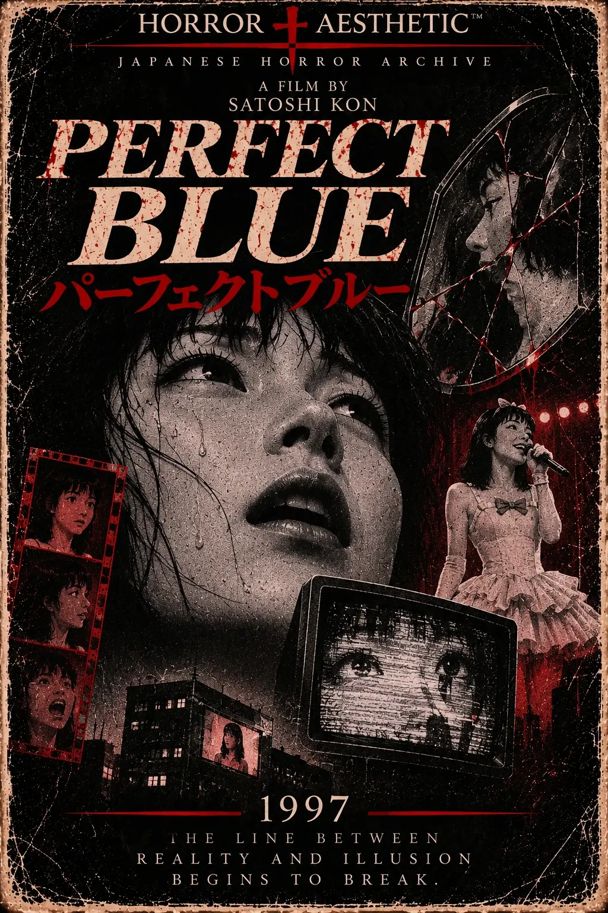

Идеальная грустьPerfect Blue (1997)
Режиссёр: Satoshi Kon · психологический хоррор, анимацияDirector: Satoshi Kon · Psychological horror, animation
★ 4.5 / 5 GORE 3 / 5
Граница между образом, который видит публика, и личностью, которую пытается сохранить Мима, постепенно исчезает.The line between the image the public sees and the self Mima tries to keep slowly disappears.
Сатоси Кон превращает историю бывшей поп-идолки в тревожный лабиринт наблюдения, двойников и распада идентичности. Мима уходит из группы ради карьеры актрисы, и вскоре за ней начинает следить кто-то, кто знает о ней слишком много.
Монтаж намеренно лишает зрителя устойчивой точки зрения: сцены, воспоминания и постановочные образы начинают подменять друг друга. Страшно здесь не столько насилие, сколько невозможность понять, где заканчивается сыгранная роль и начинается сама героиня.
Satoshi Kon turns the story of a former pop idol into an unsettling maze of surveillance, doubles and a dissolving identity. Mima leaves her group for an acting career, and soon someone who knows far too much about her begins to watch her.
The editing deliberately denies the viewer a stable point of view: scenes, memories and staged images start to replace one another. The fear comes less from the violence than from being unable to tell where a performed role ends and the woman herself begins.